Lawang Sewu
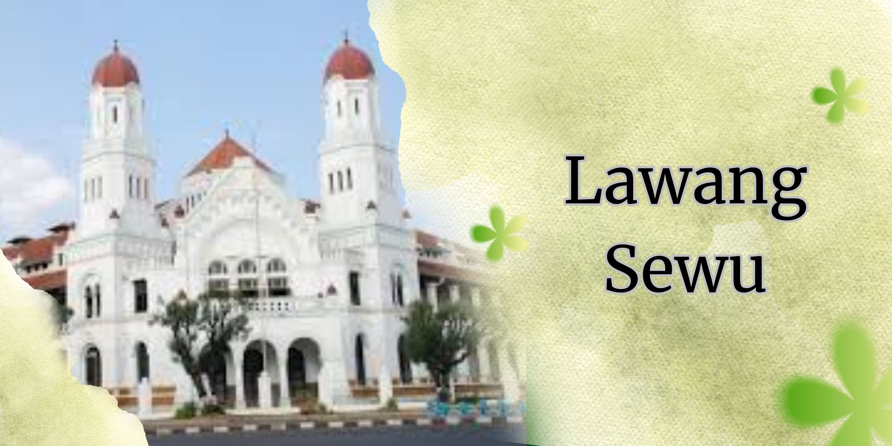Details
Lawang Sewu memiliki nyaris 1000 pintu! Nama "Lawang Sewu" (Pintu Seribu) karena banyaknya pintu dan jendela (sekitar 928).Dibangun 1904 jadi kantor pusat kereta api Belanda, lalu jadi penjara bawah tanah kejam & tempat eksekusi tentara Jepang. Lukisan kaca patri (stained glass) menampilkan kisah kemakmuran Jawa, kekuatan Belanda, kota maritim, dan kejayaan perkeretaapian, karya Johannes Lourens Schouten.Toiletnya punya ubin asli pabrik Belanda dan urinoir merek Adoman dari Inggris yang langka. Gaya arsitektur kolonial Belanda dengan lengkung sederhana yang adaptif terhadap iklim setempat dan sentuhan seni Art Deco. Ruang bawah tanahnya yang dulunya jadi saluran air dan penjara menyimpan aura mistis, sering dikaitkan dengan penampakan dan menjadi daya tarik wisata uji nyali. Awalnya dibangun untuk mendukung kemajuan transportasi kereta api Hindia Belanda, mencerminkan simbol modernitas pada masanya.
Waktu Operasional: Senin-Minggu pukul 07.00-21.00 WIB.Harga Tiket Masuk Gedung Lawang Sewu
Harga Tiket Masuk:
- Dewasa & Mahasiswa : Rp. 20.000,- / orang
- Anak-anak & Pelajar : Rp. 10.000,- / orang
- Wisatawan Mancanegara : Rp. 30.000,- / orang
Fasilitas Umum & Pendukung:
- Toilet & Mushola: Tersedia untuk kenyamanan pengunjung.
- Ruang Laktasi: Untuk ibu menyusui.
- Perpustakaan: Menyimpan buku-buku seputar kereta api.
- Smoking Area: Area khusus untuk merokok.
- Ruang P3K: Untuk pertolongan pertama jika diperlukan.
- Pojok Kuliner: Tempat untuk membeli makanan dan minuman.
Fasilitas Edukasi & Sejarah (Museum):
- Koleksi Museum: Menyajikan berbagai koleksi terkait sejarah perkeretaapian Indonesia, seperti mesin hitung, replika lokomotif, dan artefak lainnya.
- Kaca Patri: Ornamen kaca patri yang menceritakan sejarah dan keindahan Jawa.
- Pameran Restorasi: Menampilkan proses pemugaran gedung.
Fasilitas Sewa (Komersial):
- Sewa Gedung: Dapat disewa untuk berbagai acara seperti pameran, pertemuan, photoshoot, syuting, pernikahan, festival, bazar, workshop, dan pentas seni.
Gallery
 >
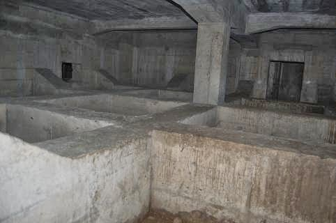>
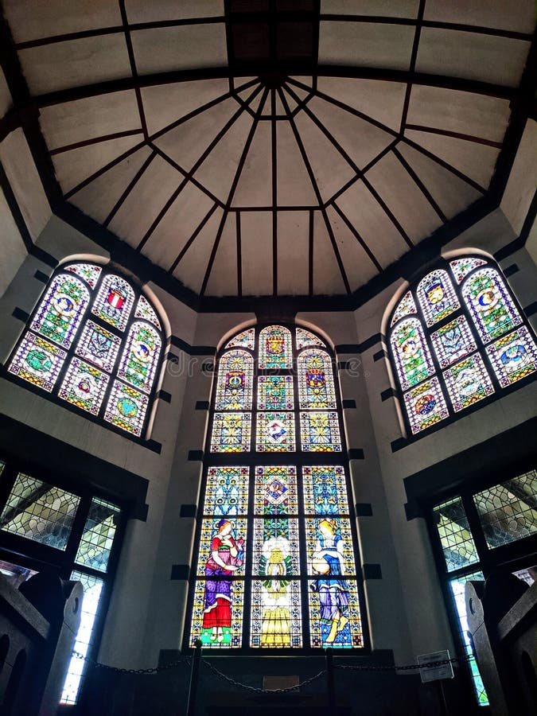>
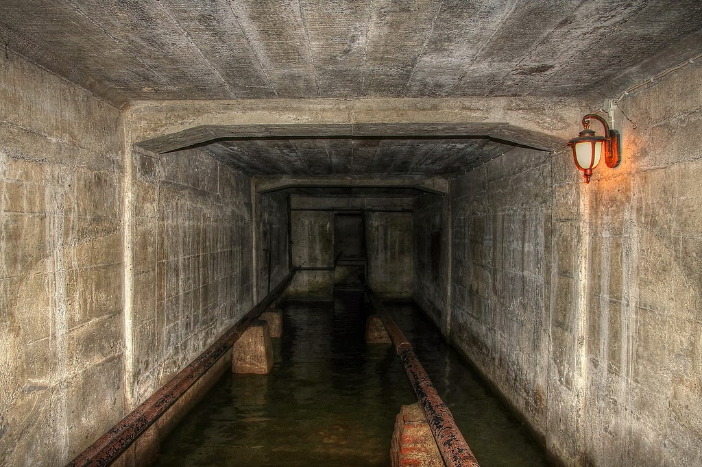>
>
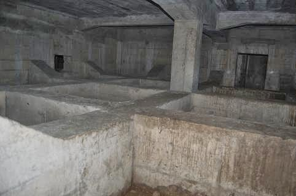>
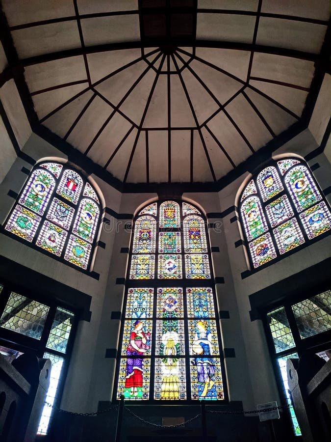>
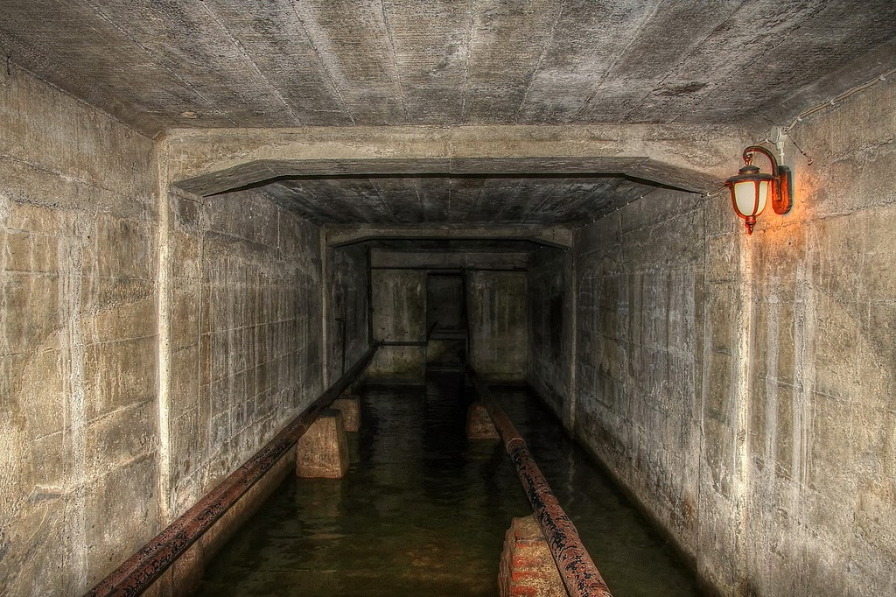>
 >
>
 >
>
Map
Culinaries
Warung Makan Mbak Tum
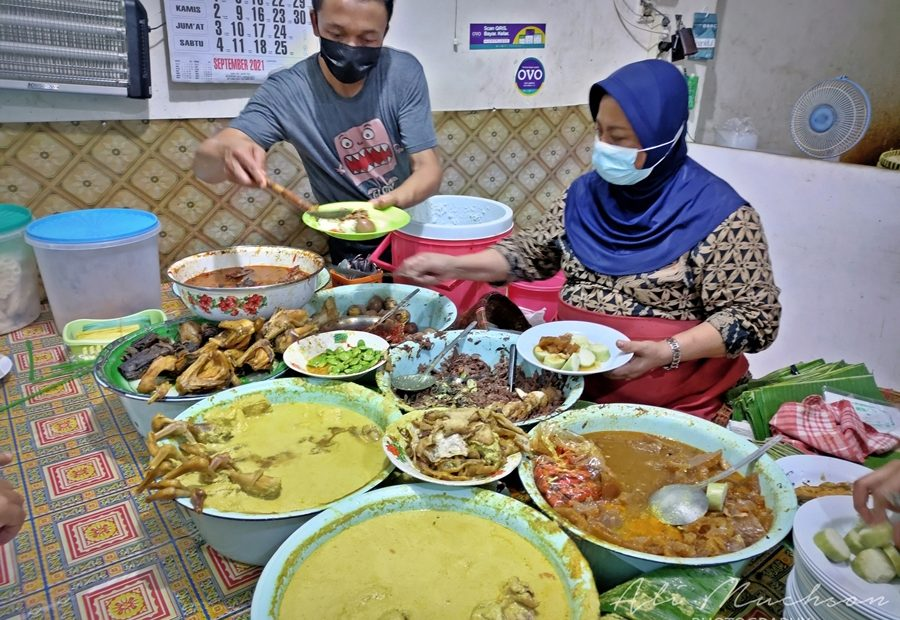Tahu Gimeal "Haji Edy"
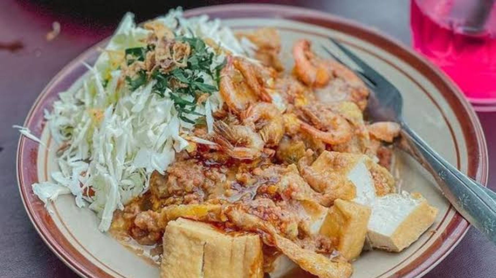
Bakmi Jowo "Pak Gundul"
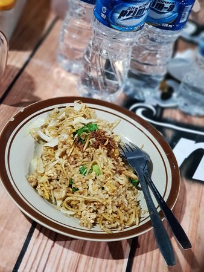 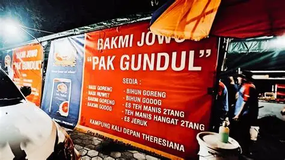Nasi Ayam/Nasi Liwet, Lontong Sayur "Bu Widodo" (Mbak Pon)
 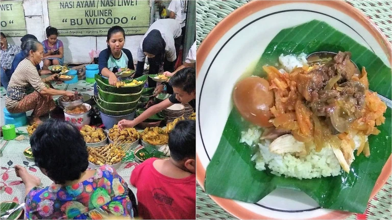
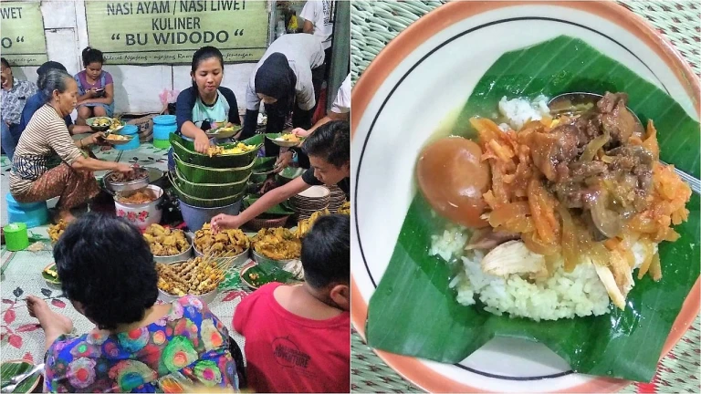
Hosted Events
Event Umum & Kreatif: Lokasi ini sering digunakan untuk Creator Crush Camp (Februari 2026), Lantern Craft Workshop, serta berbagai pameran budaya.
Lawang Sewu Short Film Festival 2025 (LSSFF): Festival film pendek pertama yang diadakan di sini, menampilkan 21 film seleksi, dengan malam penganugerahan dihadiri tokoh nasional.
Lawang Sewu Festival (Akhir Tahun - Awal Tahun): Acara akhir tahun (30 Desember 2025 - 4 Januari 2026) yang dimeriahkan oleh penampilan musisi nasional/internasional, kuliner, dan tenant lokal.
Contact
Telpon - 081215168808
Email - lawang.sewu@kawisata.id
About Us
PT. Lawang Sewu Teknologi (LST) percaya bahwa setiap bisnis memiliki kesempatan yang sama untuk tumbuh kembang. Berpegang pedoman tersebut, kami terus berinovasi untuk mendorong perkembangan beragam bisnis baik di Indonesia maupun Global melalui pemanfaatan teknologi yang efektif dan efisien sehingga tercipta optimalisasi proses.
LST hadir untuk memberikan layanan mulai dari SAAS, IAAS, Konsultan TI, Software Development dengan mengandalkan pengelolaan Infrastruktur (Data Center & DRC) Mandiri sehingga kami dapat menyediakan solusi automasi bisnis berbasis cloud untuk mendukung perkembangan beragam bisnis lokal maupun internasional, dari mulai bisnis terkecil sampai besar, solusi untuk pemerintah desa sampai ke pemerintah pusat melalui penggunaan teknologi informasi